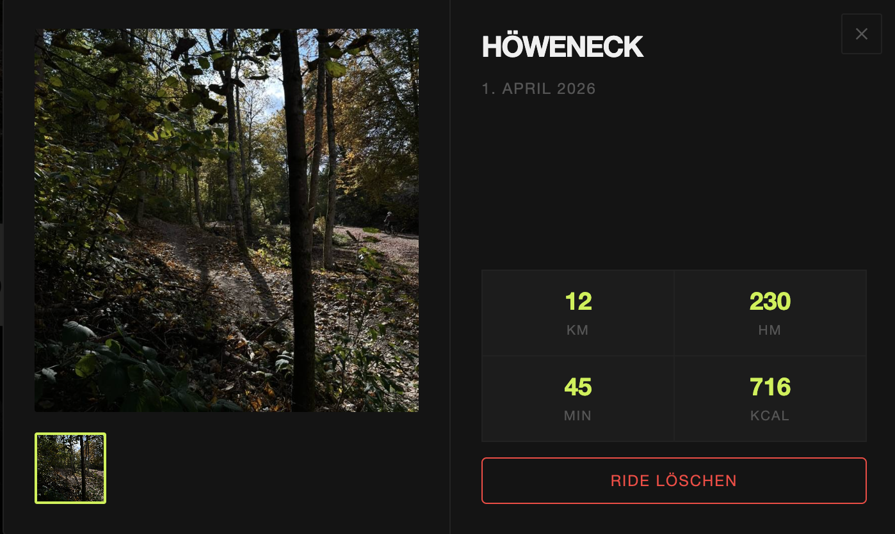
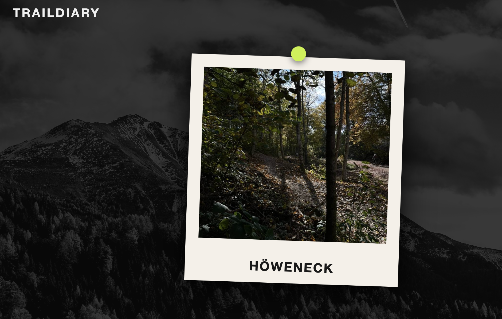

Ein persönliches MTB-Fahrtenbuch – Rides als Polaroid-Karten auf einer interaktiven Pinnwand pinnen, Statistiken tracken und Routen per Screenshot festhalten.
Traildiary ist ein Nebenprojekt, das aus einer simplen Frage entstand: Wie kann man MTB-Rides nicht nur tracken, sondern wirklich festhalten? Kein trockenes Dashboard – sondern etwas, das sich anfühlt wie ein echtes Fahrtenbuch.
Die Antwort: eine interaktive Pinnwand, auf der jeder Ride als Polaroid-Karte landet – mit Route-Screenshot, Statistiken und einer leichten Rotation für den handgemachten Look. Zoom, Pan, alles frei beweglich. Vollständig im Browser, ohne Backend.
